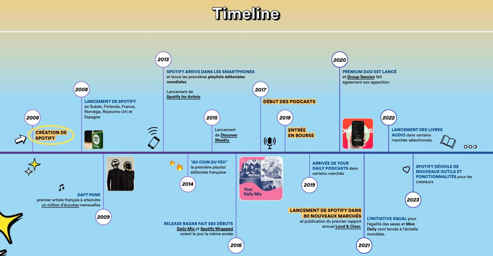
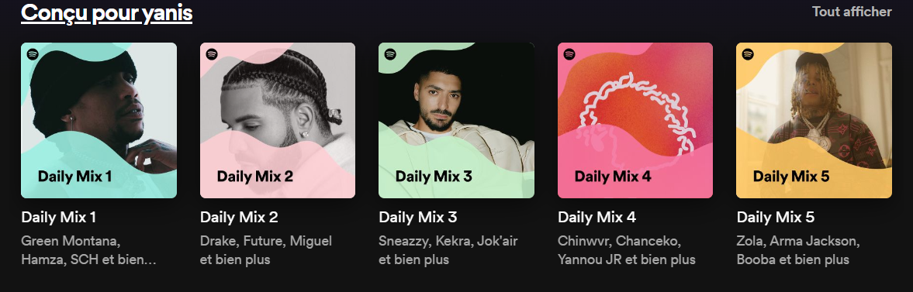

Accueil
Accueil
Présentation :
Fondée en 2006 en Suède, Spotify est rapidement devenue une référence mondiale en matière de streaming musical. L'entreprise a révolutionné la façon dont nous écoutons de la musique en offrant un accès illimité à des millions de chansons, d'albums et de podcasts sur toutes les plateformes.
Grâce à ses fonctionnalités innovantes, telles que la découverte personnalisée, la création de playlists et l'accès à des contenus exclusifs, Spotify s'est imposée comme le choix numéro un pour les amateurs de musique à travers le monde. Aujourd'hui, des millions d'utilisateurs profitent de l'expérience musicale unique qu'offre Spotify, faisant de cette plateforme un incontournable de la culture audio numérique.
En plus de 15 ans d'existence, l'application est devenue l'application la plus utilisé pour le streaming musicale à travers le monde entier.
Fonctionnement :
Spotify propose un modèle freemium unique qui combine une offre gratuite avec des fonctionnalités premium. Les utilisateurs gratuits peuvent accéder à une vaste bibliothèque musicale, écouter des playlists recommandées et découvrir de nouveaux artistes, le tout soutenu par des annonces publicitaires.
Cependant, pour une expérience sans publicité, une qualité audio supérieure et des fonctionnalités avancées telles que le téléchargement hors ligne, les utilisateurs peuvent opter pour l'abonnement premium. Ce modèle permet à chacun de profiter de la musique selon ses préférences et son budget, offrant une flexibilité et une accessibilité qui ont contribué au succès mondial de Spotify en tant que leader du streaming musical.
Voici les différents abonnement disponibles :
- Spotify Gratuit : Accès à une immense bibliothèque musicale avec des annonces publicitaires. Gratuit.
- Spotify Premium Individuel : Écoute sans publicité, qualité audio supérieure, téléchargement hors ligne, saut illimité des chansons. Environ 9,99 € par mois.
- Spotify Premium Famille : Jusqu'à six comptes premium individuels sous un seul abonnement. Environ 14,99 € par mois.
- Spotify Premium Étudiants : Tarif réduit pour les étudiants. Environ 4,99 € par mois.
- Spotify Premium Duo : Deux comptes premium individuels avec une playlist spéciale Duo. Environ 12,99 € par mois.
Accessibilité :
Spotify offre une expérience d'écoute musicale flexible et accessible sur une variété de supports. Que vous utilisiez un ordinateur (Windows, macOS, Linux), un téléphone portable (Android, iOS), une tablette, ou même des consoles de jeu (PlayStation, Xbox), Spotify est là pour vous.
Vous pouvez également accéder à Spotify via les navigateurs web les plus courants et l'utiliser sur des appareils connectés tels que des enceintes intelligentes, des téléviseurs intelligents et des systèmes audio domestiques. Cette compatibilité étendue garantit que vous pouvez profiter de votre musique préférée où que vous soyez, que ce soit à la maison, en déplacement, ou même en jouant à vos jeux vidéo préférés.
Vous pouvez accèder au lecteur web via ce lien.
Daily Mix :
Daily Mix est une fonctionnalité de Spotify qui crée des playlists personnalisées basées sur vos goûts musicaux et vos habitudes d'écoute. Voici comment fonctionne Daily Mix en détails :
- Création Automatique : Daily Mix utilise un algorithme avancé pour analyser votre historique d'écoute, vos playlists préférées et vos artistes favoris afin de générer automatiquement des playlists uniques.
- Variété et Cohérence : Chaque Daily Mix est conçu pour offrir une variété de chansons tout en conservant une cohérence thématique, ce qui signifie que vous obtenez une sélection de musique diversifiée mais harmonieuse.
- Mises à Jour Quotidiennes : Comme son nom l'indique, Daily Mix est mis à jour quotidiennement pour vous proposer de nouvelles chansons et garder vos playlists fraîches et intéressantes.
- Adaptation Personnalisée : En fonction de vos interactions avec les playlists Daily Mix (comme les chansons que vous écoutez ou sautez), Spotify ajuste continuellement les sélections pour mieux correspondre à vos préférences musicales.
- Accessible et Facile à Utiliser : Les Daily Mixes sont facilement accessibles depuis l'onglet "Vos Mix" de votre bibliothèque Spotify, ce qui vous permet de les retrouver rapidement et de les écouter à tout moment.
En résumé, Daily Mix est une fonctionnalité pratique et intelligente de Spotify qui vous offre des playlists personnalisées adaptées à vos goûts et qui évoluent avec vous au fil du temps, garantissant ainsi une expérience d'écoute toujours plaisante et enrichissante.
